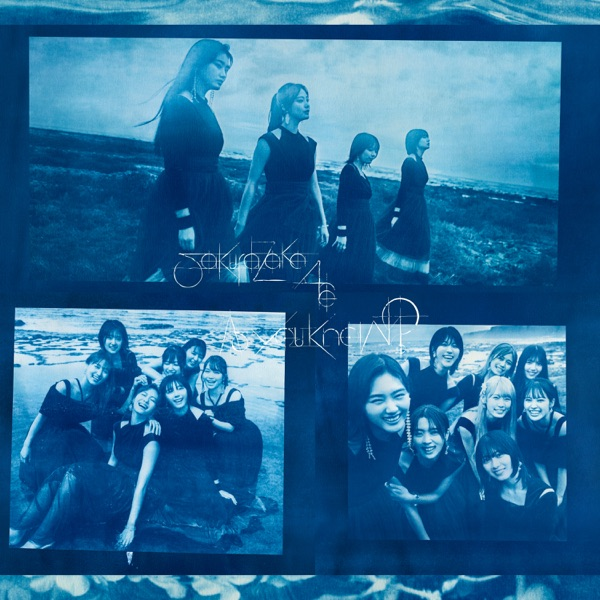

サカミチ
サカミチOne-way stairsわんうぇいすてあず

初収録リリース「As you know?」のジャケット
フォーメーション
上が後列、下が前列です。色付きがセンター。（公式発表に基づく）
 森田ひかる
森田ひかる 藤吉夏鈴
藤吉夏鈴参加メンバー（2名）
この曲が披露されたライブ（17件）
同じリリースの曲
摩擦係数、条件反射で泣けて来る、One-way stairs、タイムマシーンでYeah!、ずっと 春だったらなあ

初収録リリース「As you know?」のジャケット
上が後列、下が前列です。色付きがセンター。（公式発表に基づく）
森田ひかる藤吉夏鈴摩擦係数、条件反射で泣けて来る、One-way stairs、タイムマシーンでYeah!、ずっと 春だったらなあ